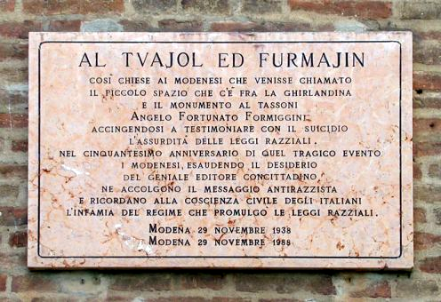

Lapide di Fortunato Formiggini
Questa lapide ricorda il suicidio dell’editore modenese Angelo Fortunato Formiggini, che il 29 novembre 1938 si getta dalla Ghirlandina per protestare contro le leggi razziali dell’Italia fascista. Non è praticante né osservante, ma discende da una famiglia ebrea. Intellettuale brillante e ironico, manifesta una certa simpatia nei confronti del fascismo, ma non ottiene la direzione dell’Enciclopedia Treccani, che viene affidata a Giovanni Gentile, molto più vicino alla visione ideologica del regime. Formiggini non perde mai l’ironia e pubblica raccolte antologiche dei classici e dei capolavori dell’umorismo, ma quando il fascismo esalta l’Impero d’Etiopia e comincia ad avvicinarsi alla Germania, non esita a prendersi gioco delle megalomanie del Duce. Le leggi razziali lo convincono che il progetto politico del regime sia fallito: dal momento che non è disposto a subire soprusi, lancia l’ultimo messaggio sorprendente della vita gettandosi dalla Ghirlandina. Legatissimo a Modena, nel testamento chiede alla città di dedicargli lo spicchio della piazzetta nel quale si schianta dopo il volo: a cinquant’anni dalla sua morte, il Comune lo ricorda con questa lapide.